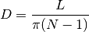

diamfind – Diameter Finder¶
Introduction:
Diameter Finder by George Murphy VE3ERP
║
┌───╥╥╥╥╥╥╫───┐
│ ║║║║║║║ │«─ object being measured.
│ ─╫╫╫╫╫╫╫─ «┼ draw a line across turns.
│ ║║║║║║║«──┼ several turns of fishing
└───╫╨╨╨╨╨╨───┘ line or heavy thread.
║
This program measures the diameter of cylindrical objects such as coil forms,
cables of bunched wires, etc. with micrometer accuracy when a micrometer is
not available.
Prompt:
Close-wind several turns of fishing line or thread around the object and with
a marking pen draw a line across the turns. Unwind the turns, count the dots,
straighten the line and measure the distance between the first and last dots.
Any unit of measure can be used. Results will be in the same units.
Analysis¶
The essence:
520 INPUT " ENTER: number of dots............................";N
530 INPUT " ENTER: distance between first and last dot.......";L
540 D=L/(PI*(N-1))
550 PRINT:COLOR 0,7:LOCATE ,25
560 PRINT USING " Diameter of object = ###.### ";D:COLOR 7,0
